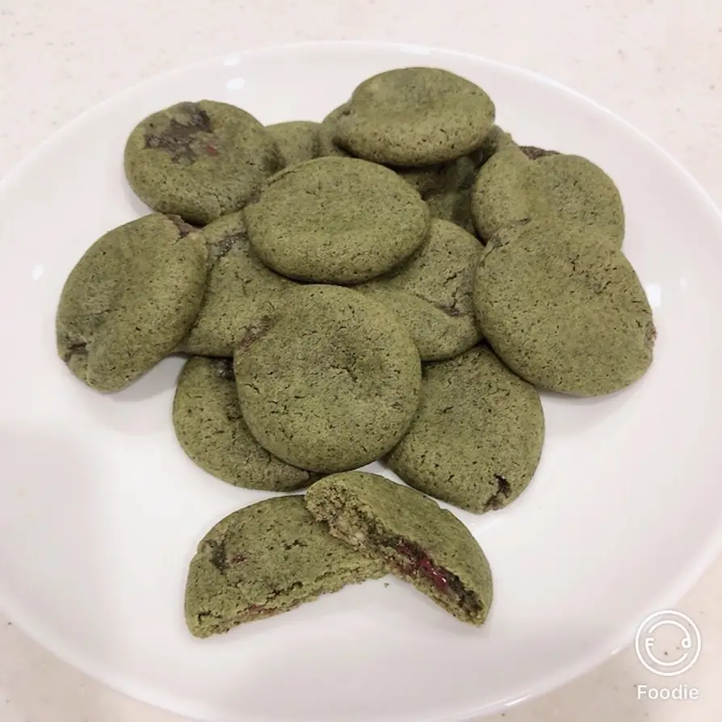

Matcha kakor med chokladfyllning
By
クックまいななパパ, 20/03/21
21 Mar 2020

Imitation av Country Ma'ams matcha kakor. Hård utsida med mjuk
chokladfyllning.
Mängd:
18 st
Ingredienser (utsida): -
Amerikansk pankaksblandning 55 g
-
Socker 8 g -
Äggula 8 g -
Smör 23 g -
Vit bönpasta 15 g -
Honung 6 g -
Rismjöl 4 g
Matcha pulver 6 g
Ingredienser (fyllning 1): -
Vit choklad 24 g -
Vit bönpasta 20 g -
Mjölk 7 g -
Honung 3 g -
Matcha pulver 2 g -
Vaniljextrakt 3 droppar
Ingredienser (fyllning 2) -
Chokladgryn 6 g -
18 vitchokladbitar 6 g
Instructions (fyllning):
Koka upp vatten i en kastrull. Lägg de första fyllningsingredienserna i
en mindre kastrull som sänks ned i vattenbadet. Rör om tills allt är
smält.
För över röran på en platt tallrik som täcks med plastfolie och ställs i
kylen tills nerkyld.
Dela upp andra fyllningens choklad i 18 lika stora bitar.
När fyllning 1 har kylts ned, ta ut ur kylen och spritsa ut fyllning i
18 lika stora kluttar på ett bakplåtspapper. Sedan tryck de bitar
choklad som förberedes i förra instruktionen (En mörk och en vit
chokladbit i varje klutt.).
Lägg kluttarna i kylen tills de är stelnade.
Instructions (ytterdegen):
Blanda smör och socker i en bunke och vispa tills det blir vitt och
fluffigt. Tillsätt sedan äggulan och blanda väl. Blanda sedan i
vitabönpastan och honungen.
Tillsätt rismjölet, pankaksblandningen och matchapulvet och blanda till
en deg.
Häll över i en plastpåse, knåda och sätt in i kylskåpet ca 30 min.
Instruktioner (Fullbordan)
Förvärm ugnen till 160 grader.
Rulla ytterdegen till 18 lika stora bollar och lägg på ett
bakplåtspapper. Platta till bollarna.
Plasera en fyllning på varje ytterdeg.
Täck fyllningen med ytterdegen och rulla till bollar.
Grädda i ugnen i 13 minuter. Bollarna kommer platta ut sig
automatiskt.
Ta ut ur ugnen och tryck ner mitten av varje kaka med en sked så att
kakorna ser ut som blodceller. Försiktig så att inte skalet
spricker.
Ta bort från plåten och låt kakorna kylas ner innan konsumption. Kakorna
smakar som bäst nerkylda.
Kommentarer:
From Janel, May 5 -- thank you, great recipe! ...